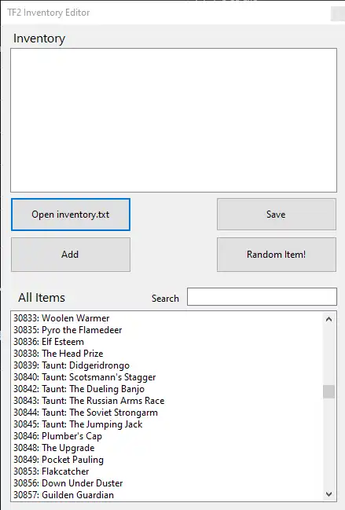

TF2 Item editor?
This item editor was made for Arwent's GameCoordinator emulator and its...not the best honestly, it's hacky, barely parses items_game.txt and doesn't even add required stuff like attributes! it just appends the defindex and some brackets lol.
It still works for the current version of the emu, and I did include compiled binaries for said emu on the Github, but i'm looking to deprecate it by adding an imgui item giver to the emulator itself, removing the need for my shitty winforms app.

I'm not exactly proud on how this functions, when you open your inventory.txt, it removes the closing bracket, so when you add items it's just putting in a set of brackets with the defindex, letting the game fill in the rest.
Then when you save, it adds that final closed bracket, meaning if you open your inventory and close the gui normally, it won't close the bracket and the inventory won't load lmaoo
Issues aside, it is pretty functional, and i've been adding my own stuff to the emulator itself to make decals functional! As well as the halloween spells because they're really cool and its something I never got to experience.
Decals and Spells!
UPDATE!!!! WEE WOO WEE WOO
Or kind of not, since this happened during my webshit development, but I made that imgui and deprecated my own shitty winforums launcher!
I also started adding stuff for killstreakifiers because I liked the sheen, I said I would stop after that, but i'm feeling motivated to add warkit functionality and maybe even unusuals! (pasting the shit out of the existing parsers lol)
Here's a video showing all that off, the GUI has a button to give all australiums since theres only a few lol, just make sure to save your inventory when you're done, though its supposed to write to file when TF2 closes, sometimes that shit doesn't happen.
I want to emphasise this would not have been possible without the existing infastructure made by Arwent, which is what allowed me to get by with adding different functionality rather than making the entire inventory system.